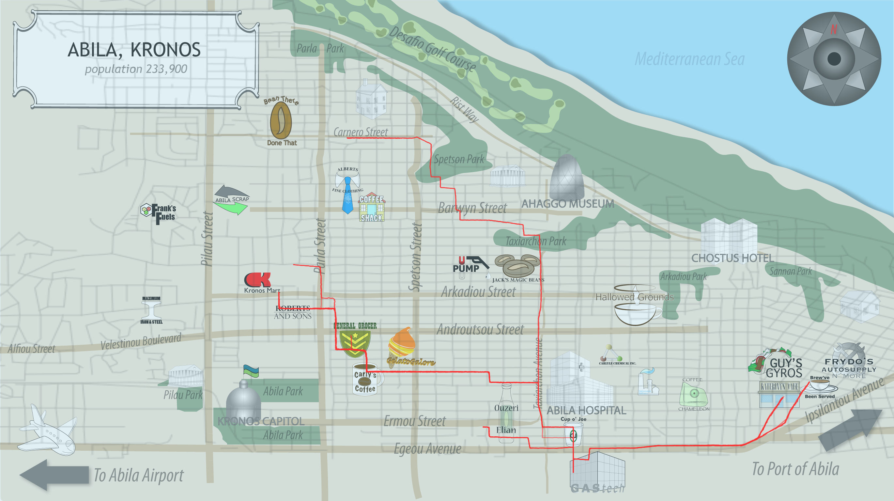
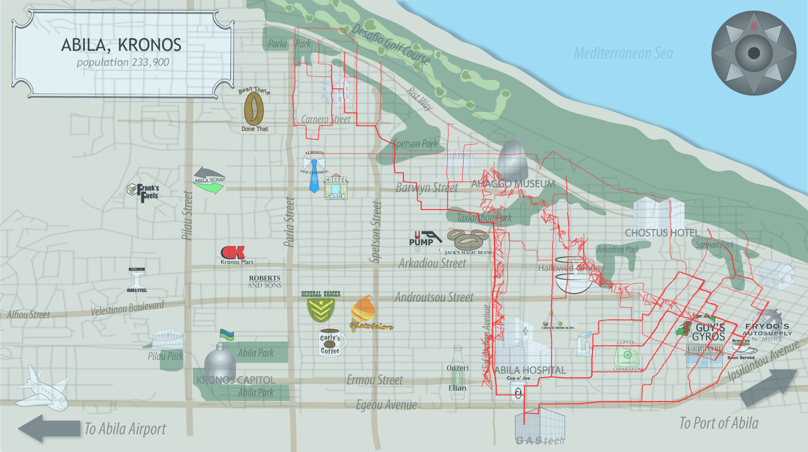
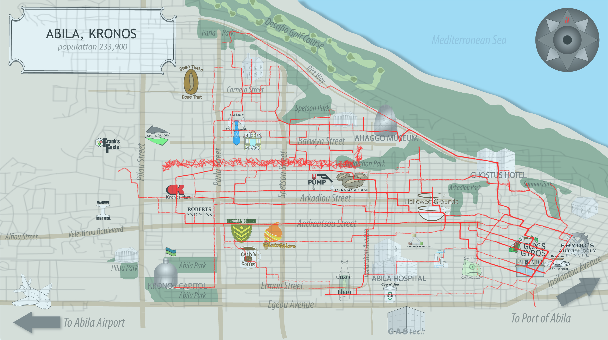
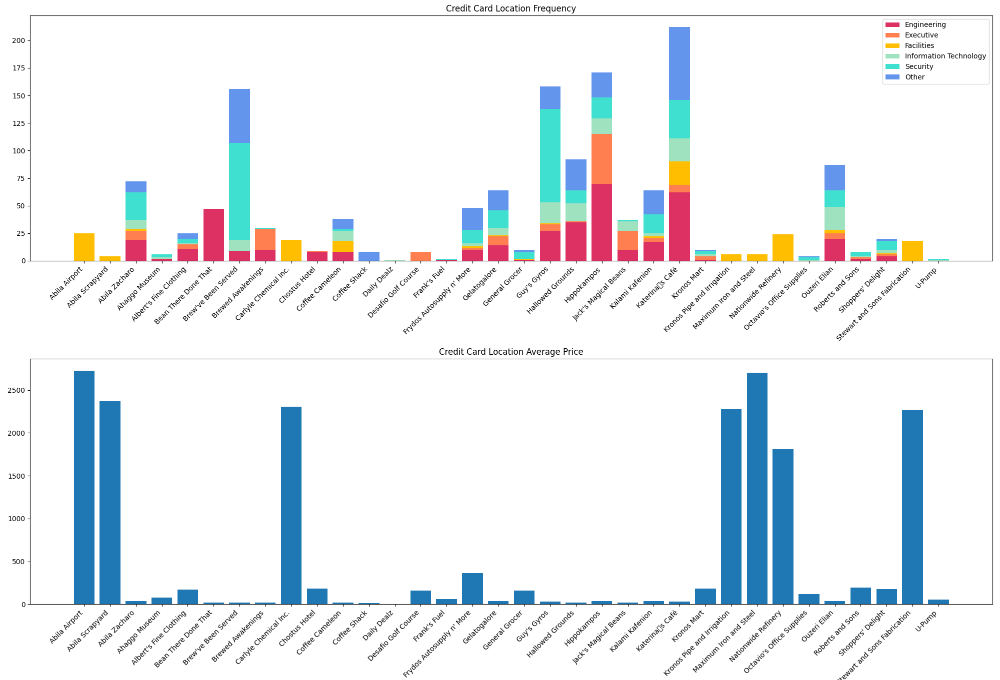
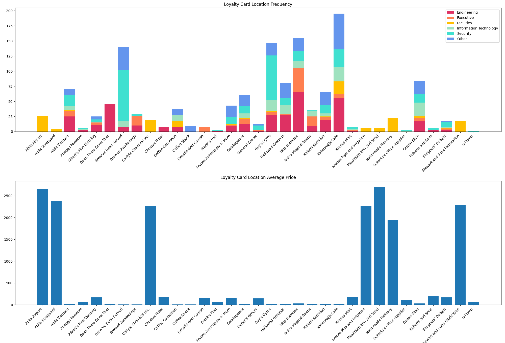
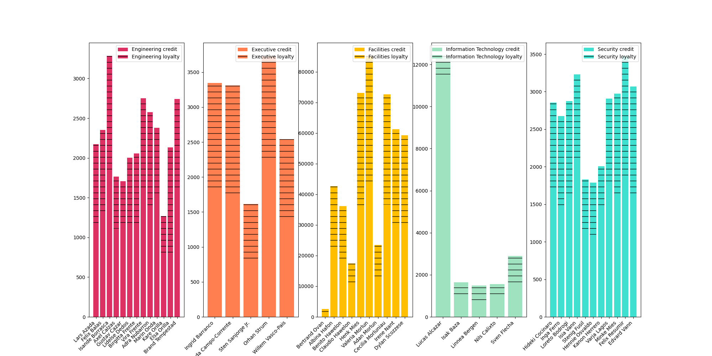

cards + loyalty


GPS location
Question 1 – Describe common daily routines for GAStech employees. What does a day in the life of a typical GAStech employee look like?

Morning (6:00 a.m. to 9:00 a.m.)
This picture depicts the paths of all cars between the hours of 6 a.m. and 8 a.m. on all working days.
Employees frequently appear in restaurants or cafeterias in addition to their homes and workplaces.
Noon (11:00 a.m. to 12:30 p.m.)
Employees' driving patterns from 11:00 a.m. to 12:30 p.m. are depicted in this diagram.
We can see the employees appear in the dining places for their lunch.

Noon (12:30 p.m. to 02:00 p.m.)
Employees' driving patterns from 12:30 p.m. to 02:00 p.m. are depicted in this diagram.
We can see the employees are coming back from the lunch places via the same path.

Afternoon (05:00 p.m. to 08:00 p.m.)
From 05:00 p.m. to 08:00 p.m., this diagram depicts the driving path of employees going home.
This figure closely corresponds to the area from where they start in the morning, confirming the employees' residential location.
Aside from that, some employees will prefer to eat first at the lower right corner, then return home.

Weekend
This picture depicts the paths of all cars in the weekends.
Employees frequently choose to go on a long-distance trip where they don't typically go in weekdays. These events also take place in the afternoon.
Unusual Patterns
We have found two unusual patterns by far:
1) Lucas Alcazar from IT department spent much more money than other employees in the department.
2) The location “Daily Dealz” has only one visit by Lucas Alzacar (also the guy mentioned in the first point).
Data Analysis

Credit Card Analysis Focused on Locations
The top stack bar chart shows the visiting frequency distribution among each type of employee for each location.
The bottom bar chart shows the average amount of money spent in each location.
Type other means this person’s information cannot be classified using the employee car-assignment CSV file.
We can easily find out that employees from Facilities spend much more money than other people, and the locations they spent huge amount money in are also only visited by Facilities employees.
Comparing the stack charts between credit cards, one location only has a record in credit card data: Daily Dealz (see the black arrow)

Loyalty Card Analysis Focused on Locations
The top stack bar chart shows the visiting frequency distribution among each type of employee for each location.
The bottom bar chart shows the average amount of money spent in each location.
